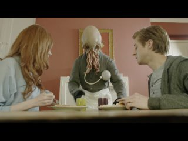
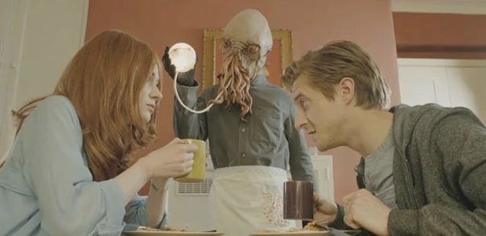

Эра Одиннадцатого Доктора
<<< НАЗАД ||| Жизнь Пондов ||| ДАЛЬШЕ >>>
MVO [BaibaKo] или Original [ENG]
Субтитры: Русские {TrueTransLate} или Английские

Все эпизоды объединены в одно видео
Pond Life
мини-эпизоды к 7 сезону
27-31 августа 2012
Формат: 5 эпизодов по ~1 мин.
| Варианты озвучек: | * MVO BaibaKo |
|---|---|
| Скачивание и просмотр: |
Пять мини-эпизодов рассказывающих о жизни Эми и Рори после их путешествий с Одиннадцатым Доктором в 6 сезоне. Серия служит своего рода приквелом к 7 сезону, где трио вновь воссоединилось и продолжило путешествовать вместе.
